Dossier 01
Profil
Bachelier STI2D option SIN (juin 2026), je prépare un BTS SIO option SISR au CFAI LDA de Saint-Étienne, en alternance au Département de la Loire, où j'assure le support aux utilisateurs et la gestion du parc informatique.
J'ai déjà pratiqué la configuration de postes, la programmation (Java, Python) et le développement web (HTML/CSS, PHP) lors de mes projets. Rigoureux, ponctuel et curieux, je mets désormais ces acquis en pratique au sein d'une collectivité, tout en continuant à progresser.
- 515score Pix
Niveau Indépendant 2 - TBmention Très Bien
au Brevet (2023) - −96 %de poids d'images
sur ce CV optimisé - 9 ansde football en club
(esprit d'équipe)
Dossier 02
Mon alternance
-
Employeur
Département de la Loire, collectivité territoriale.
-
Contrat
Apprentissage pendant mon BTS SIO option SISR (2026 – 2028).
-
Rythme
2 semaines en entreprise / 2 semaines en cours au CFAI LDA de Saint-Étienne.
-
Missions
Support aux utilisateurs et gestion du parc informatique.
Dossier 03
Compétences
Développement
Outils & méthodes
Qualité web
Dossier 04
Projets
BTS SIO · 1re année
IT Config : site vitrine et panel d'administration
Site d'une entreprise fictive de matériel informatique, avec un espace d'administration privé codé en PHP natif.
- Connexion protégée contre les attaques par force brute
- Formulaire de contact limité à 1 message par minute et 5 par heure par IP
- Envoi d'e-mails SMTP (PHPMailer) et réinitialisation du mot de passe par code
- Page de maintenance : diagnostic du serveur et journal des connexions
- PHP 8
- HTML/CSS
- JavaScript
- Apache (WAMP)
BTS SIO · Projet web
Ce CV en ligne, version Star Wars
Page HTML statique sans framework, publiée avec GitHub Pages et vérifiée avec les validateurs W3C, Outiref et PageSpeed.
- Images passées de 4,2 Mo à 0,16 Mo (WebP et SVG), soit −96 %
- Navigation complète au clavier, contrastes renforcés
- Animations désactivées si l'utilisateur limite les mouvements
- 44 illustrations animées dessinées en SVG et sons synthétisés en JavaScript
- HTML5
- CSS3
- JavaScript
- GitHub Pages
Dossier 05
Parcours
Formations
-
BTS SIO, option SISR
CFAI LDA, Saint-Étienne
Septembre 2026 – juin 2028 · en cours
-
Baccalauréat technologique STI2D, option SIN
Lycée François-Mauriac Forez, Andrézieux-Bouthéon
Obtenu en juin 2026
-
Diplôme national du Brevet
Collège Émile Falabrègue, Saint-Bonnet-le-Château
2023 · mention Très Bien
Expériences
-
Alternance en BTS SIO SISR
Département de la Loire
2026 – 2028 · en cours
Support aux utilisateurs et gestion du parc informatique.
-
Stage d'observation de seconde
Police municipale, Saint-Galmier
Juin – juillet 2024
Découverte du monde du travail et de l'organisation d'un service public.
-
Stage d'observation de troisième
Pharmacie Saint-Laurent, Veauche
Novembre – décembre 2022
Découverte du monde du travail et de l'accueil du public.
Dossier 06
Mes atouts : l'équipage de droids
R2-D2
Astromech de terrain
Fiable sous pression, il répare le système quand tout s'effondre.
C-3PO
Maître du protocole
Il parle six millions de langages… et sait toujours se présenter à l'heure.
BB-8
Explorateur curieux
Petit, rapide, jamais fatigué : il observe et explore chaque nouveau terrain.
Langues
- FrançaisLangue maternelle
- AnglaisIntermédiaire
- EspagnolNotions
Certificats
- Pix : Niveau Indépendant 2 (score 515)
- Prévention et secours civiques (PSC 1)
- Apprentissage anticipé de la conduite (en cours)
Centres d'intérêt
- Football en club depuis 9 ans
- Cinéma (saga Star Wars en tête)
- Jeux vidéo
Dossier 07 · Bonus
La galaxie Star Wars
Pour le plaisir : les planètes et les personnages de la saga, dessinés et animés pour ce CV.
20 planètes
TatooinePlanète désertique à deux soleils, berceau de Luke Skywalker.
CoruscantPlanète-ville, capitale de la République puis de l'Empire.
NabooPlaines verdoyantes et cités gungans, planète de Padmé Amidala.
HothMonde gelé et isolé, siège de la base rebelle Echo.
DagobahMarais brumeux, lieu d'exil de Yoda.
EndorLune forestière des Ewoks, théâtre de la chute de l'Empire.
KashyyykMonde-forêt des Wookiees aux arbres gigantesques.
MustafarPlanète volcanique, forteresse de Dark Vador.
AlderaanMonde pacifique de Leia, détruit par l'Étoile de la Mort.
MandalorePlanète des Mandaloriens et de leur armure en beskar.
GeonosisMonde rocheux où fut produite l'armée séparatiste.
KaminoPlanète océanique, berceau de l'armée des clones.
UtapauCités creusées dans des gouffres, refuge du général Grievous.
BespinGéante gazeuse et sa Cité des Nuages.
IlumPlanète glacée des cristaux kyber, sanctuaire Jedi.
Ahch-ToÎle du premier temple Jedi, exil de Luke.
ScarifParadis tropical protégé par un bouclier planétaire.
JakkuDésert parsemé d'épaves de la dernière grande bataille.
CraitPlaines de sel aux reflets rouges, refuge de la Résistance.
CorelliaChantiers navals réputés, planète natale de Han Solo.
21 personnages
Luke SkywalkerGarçon de ferme devenu chevalier Jedi.
Leia OrganaPrincesse d'Alderaan et générale de l'Alliance rebelle.
Anakin SkywalkerL'Élu, Jedi passé du côté obscur.
Dark VadorSeigneur Sith en armure noire, bras armé de l'Empire.
Han SoloContrebandier légendaire, capitaine du Faucon Millenium.
ChewbaccaWookiee loyal, copilote et ami de Han Solo.
Obi-Wan KenobiMaître Jedi, mentor d'Anakin puis de Luke.
YodaGrand Maître Jedi, 900 ans de sagesse.
Dark SidiousL'empereur Palpatine, Sith manipulateur.
Dark MaulSith au sabre double, apprenti de Sidious.
GroguJeune être sensible à la Force, protégé de Din Djarin.
ReyPilleuse d'épaves devenue Jedi.
Kylo RenHéritier tourmenté de la lignée Skywalker.
FinnStormtrooper repenti, héros de la Résistance.
Ahsoka TanoAncienne padawan d'Anakin, guerrière indépendante.
Din DjarinLe Mandalorien, chasseur de primes au grand cœur.
Boba FettChasseur de primes en armure mandalorienne.
Lando CalrissianBaron-administrateur de la Cité des Nuages.
Jyn ErsoRebelle à l'origine du vol des plans de l'Étoile de la Mort.
Padmé AmidalaReine puis sénatrice de Naboo, mère de Luke et Leia.
Comte DookuSeigneur Sith à la tête des Séparatistes.
Dossier 08
Me contacter
Une question sur mon parcours ou mes projets ? Le plus simple est de m'écrire sur LinkedIn ou de m'envoyer un message depuis mon profil GitHub. Je vous réponds rapidement.
Par souci de confidentialité, ce site ne publie ni numéro de téléphone, ni adresse e-mail, ni adresse postale.